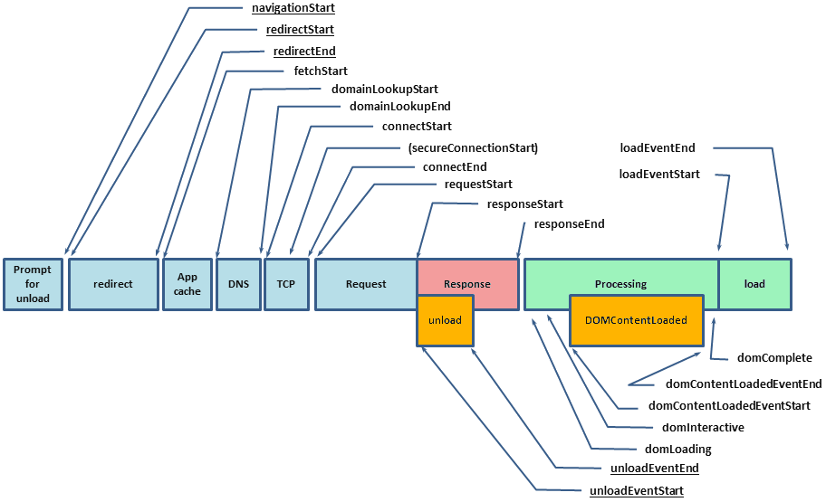

Podstawy profilowania
i analiza wydajności aplikacji webowych
Licencja: CC BY-ND 3.0 PL
Oznaczenia
Dobre praktyki
Ostrzeżenie!
Złe przykłady
Wprowadzenie
Co to znaczy szybko ?
| Opóźnienie | Reakcja użytkownika |
|---|---|
| 0 - 100 ms | Błyskawicznie |
| 100 - 300 ms | Minimalne opóźnienie |
| 300 - 1000 ms | Wyczuwalne opóźnienie |
| > 1 s | Zmiana kontekstu |
| > 10 s | "Wrócę później..." |
Co to znaczy płynnie ?
===
Jak to osiągnąć?
Musimy wiedzieć jak najwięcej o środowisku
Budowa przeglądarki
Złożoność
10 mln < 15 mln
Firefox 26 Linux 3.3 1.5xArchitektura
Context Switching

Sieć
Bandwidth vs. Latency
Zmniejszenie opóźnienia o 1 ms kosztuje 80 mln $
A co z mobile?
Jest jeszcze gorzej!
4G - średnie opóźnienie: 150 ms
3G - średnie opóźnienie: 400 ms
Tryby pracy modemu
Ilość żądań
Ilość żądań
Optymalizacja
- Dla dużej ilości obrazków używaj techniki sprites
- Unikaj przekierowań i powolnych serwerów DNS
- Korzystaj z serwerów CDN
- Rozprosz zasoby i zastosuj sharding
- Hostuj statyczne zasoby na osobnym serwerze
- Hostuj statyczne zasoby bez SSL
- Usuwanie ciasteczek i zbędnych nagłówków
- HTTP Cache - ETags oraz If-Modified-Since
- Zmniejsz liczbę osobnych plików *.js oraz *.css
Ścieżka krytyczna
Parsowanie
Skrypty
Reflow / Layout
... czyli las w przeglądarce ;)
Rysowanie
Repaint
... czyli przenosimy las na ekran ;)
requestAnimationFrame()
A co z GPU?
Możemy wymuszać akcelerację sprzętową dla poszczególnych elementów
Wszystko na GPU !
Na pewno nie wszystko
- Pamięć na GPU jest skończona
- Koszt przesyłu danych pomiędzy RAM a VRAM
- Kluczem jest tutaj znajomość aplikacji
Ale to jeszcze nie koniec...
Bateria
- Nadmierne wykorzystanie WiFi / 3G / 4G
- Nadmierne wykorzystanie CPU i GPU
Garbage Collector
- Scavenge
- Mark-Sweep
Narzędzia
Developer Tools
Chrome - Timeline
Chrome - Profilowanie
Chrome - Pamięć
Chrome - Network
Chrome - Konsola
Chrome - Renderowanie
Firefox
IE 9 / 10
IE 11
Inne
Najważniejsze to dobrze poznać narzędzia deweloperskie z ulubionej przeglądarki
Navigation Timing API
Navigation Timing API
ySlow

PageSpeed
Google Speed Tracer
Chrome Web Performance Toolkit
Chrome Hidden Pages
- chrome://version/
- chrome://tracing
- chrome://histograms/DNS.ResolveSuccess
- ... i wiele, wiele innych
Windows Performance Toolkit
V8 profiler - D8
Benchmarki
Tryb prywatny
Narzędzia
- jsperf
- Browserscope
- d8, node --profiler
Microbenchmarks
You do it wrong!
Dlaczego?
function benchmark() {
function fn(a, b, c, d) {
return a + b + c + d;
}
var start = new Date;
for (var n = 0; n < 1e6; n++) {
fn('a', 'b', 'c', 'd');
}
return (new Date - start);
}
Dlaczego?
function benchmark() {
var start = new Date;
for (var n = 0; n < 1e6; n++) {
// Ponieważ znamy fn, rozwijamy ją w miejscu wywołania:
a + b + c + d;
}
return (new Date - start);
}
Dlaczego?
function benchmark() {
var start = new Date;
for (var n = 0; n < 1e6; n++) {
// Wynik nie jest nigdzie używany więc kompilator go usunie...
}
return (new Date - start);
}
Dlaczego?
function benchmark() {
var start = new Date;
// ... razem z pętlą for, która była teraz pusta ;).
return (new Date - start);
}